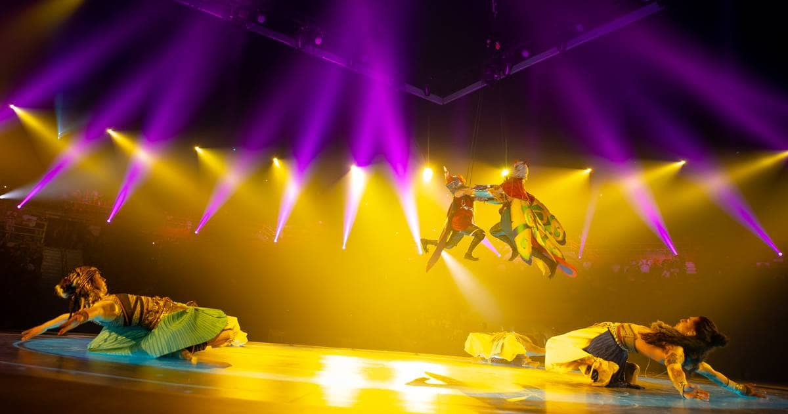
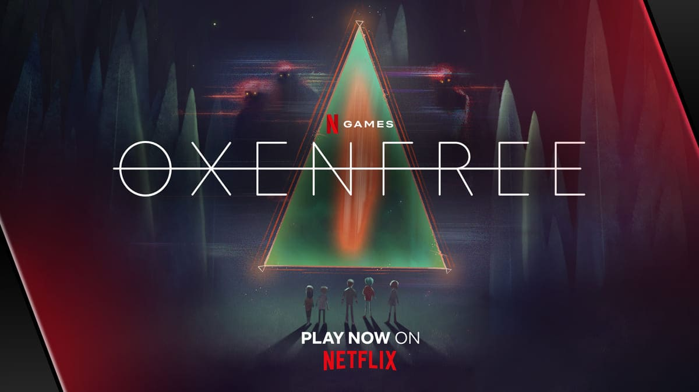
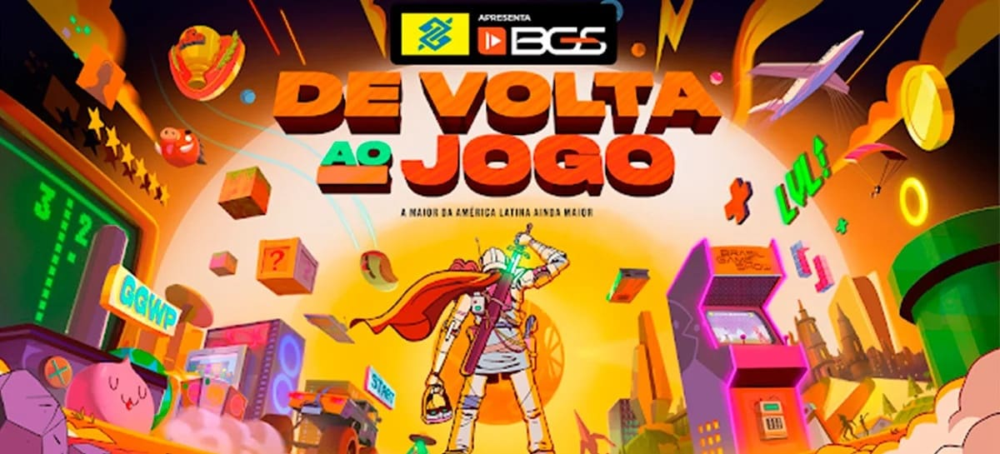

Abertura do CBLOL, no Ibirapuera e Mundial de LOL 2022
A Riot Games, publisher de um dos maiores games do mundo, o League of Legends, realizou, no dia 03 de setembro, em São Paulo, a Grande Final do Campeonato Brasileiro de League of Legends (CBLoL). O evento reuniu pouco mais de 10 mil pessoas no Ginásio do Ibirapuera, capacidade máxima do local, e marcou o retorno dos grandes eventos de e-sports com público.
Ler mais

Jogo de mistério sobrenatural OXENFREE já está disponível na Netflix
OXENFREE, o jogo de aventura aclamado pela crítica criado pelo Night School Studio, já está disponível na Netflix para download em aparelhos iOS e Android, NETFLIX OXENFREE traz a tão aguardada tradução e localização, disponível exclusivamente na Netflix. No momento do lançamento, o jogo já tem legendas em mais de 30 idiomas, incluindo o brasil.
Ler mais

BGS 2022: Brasil Game Show e Tudo o que você precisa saber sobre o evento
Após dois anos sem evento presencial, devido à pandemia da Covid-19, a BGS 2022 retorna ao formato presencial com sete (7) dias de evento. O evento será realizado de 6 a 12 de outubro no Expo Center Norte, em São Paulo. incluem a participação inédita de Andy Field, dublador de Marvel Avengers Academy, Paladins e da série de terror Five Nights at Freddy s.
Ler mais